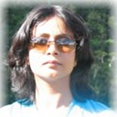
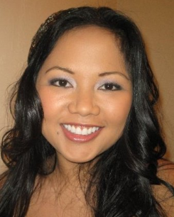
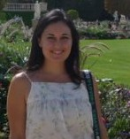
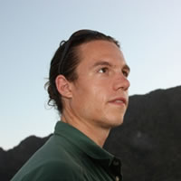
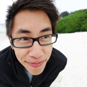

Stay current with REEF's projects and events. We pledge to honor your privacy and send only relevant notices. Sign up here.

Shawn Tabb is originally from Midland, Michigan but currently resides Litchfield Park, Arizona. Shawn obtained an Associates degree in Electronics from Glendale Community College and has worked in the Semiconductor Industry since 1994. Shawn currently works for Intel in Process Engineering. Not content with his current job, Shawn decided to return to school and obtain his Bachelor’s in Business Administration. After two years of hard work Shawn received a degree from Northern Arizona University, graduating Magna Cum Laude.
Volunteering was a way for Shawn to accomplish two goals; make a difference helping contribute to a worthwhile cause along with gaining real world experience in Project Management to enrich his career. In addition to volunteering at REEF, Shawn also donates his time to a local organization dedicated to promoting responsible recreation on public lands.
When those rare moments of free time do occur, Shawn likes to spend the time outdoors with his family. The Tabb family enjoys camping, exploring and taking in all the activities being outdoors offers. Other free time activities include spending as much time as possible with his two teenage children before they go off to college.
Natalie grew up in the Bay Area and currently resides in Oakland. After graduating from UC Berkeley with a degree in Economics, she began working in marketing in at a startup in the South Bay.
Natalie has enjoyed volunteering since a young age, and has continued this spirit through college and post-graduation. She has experience in data migration and segmentation, website development, and online marketing. She is excited to expand REEF's work by assisting in all of the above areas and helping in any other way she can!
Read about Syndey Larson's Volunteer Experience While in the Philippines
 Sydney Larson is a San Francisco Bay Area native and a "California girl" through and through. At Vanderbilt University Sydney majored in molecular biology and minored in music. But, she had a change of heart her final semester and decided to look for a job in renewable energy. Since graduation, Sydney has been working for a solar company called SunRun which, in her 4 years there, has grown from a tiny start-up to one of the nation's largest residential solar companies.
Sydney Larson is a San Francisco Bay Area native and a "California girl" through and through. At Vanderbilt University Sydney majored in molecular biology and minored in music. But, she had a change of heart her final semester and decided to look for a job in renewable energy. Since graduation, Sydney has been working for a solar company called SunRun which, in her 4 years there, has grown from a tiny start-up to one of the nation's largest residential solar companies.
Sydney is extremely passionate about renewable energy and believes that, at this juncture in the world's history, a sustainable energy infrastructure will serve as the necessary foundation for any successful economy. Accordingly, she is thrilled to be volunteering for REEF in order to help developing nations build energy infrastructures that will allow their economies to grow and pull their people out of poverty. In her free time Sydney enjoys skiing, rock climbing, yoga, exploring San Francisco, and cooking.
Manimala Kumar grew up in India. Shortly after finishing B.E. in Electrical Engineering and a post graduation in Information Technology she moved to USA. Hopping and working in many states from east to west, she landed up in the Bay Area. She works full time as an IT project manager.
She was lucky to be in a college nestled in lush green Himalayas. She stayed connected with nature during excursions at various places in India. She happened to work with smart grid software and developed interest in energy and related technologies. Being from a developing country she understands lack of energy infrastructure and sustainability movement there. She hopes to help REEF to prove it’s idea and expand subsequently.
In her spare time she loves to do cultural programs, sing, dance, photograph, read, travel, hike and play with her kid.
Randall Aluwigrew up for the majority of his life in Jakarta, Indonesia, until moving to the U.S. where he attended Carnegie Mellon University receiving a degree in Business Administration. After graduating, he moved to Sacramento, California to work at a private equity consulting firm.
Randall currently resides in San Francisco, California and works at an investment banking firm. He enjoys volunteering at organizations serving the underprivileged communities in Asia. Back in Indonesia, he was an active participant in community service oriented organizations. He is also excited about learning more about the renewable energy space building upon his previous internship at a clean energy focused private equity firm. He looks forward to contributing to the development of REEF.
Hareesh Gali is our youngest volunteer, talented beyond his years. He wrote to REEF asking for a volunteer position as a web developer. When his age came up we were at a lost as to whether to bring him on board but his perseverance impressed us and with his mother's backing we gladly extended a position. Hareesh at a young age is an accomplished web developer with certificates of web development from Northwestern University. Today Hareesh has made significant contributions to improve our website's navigation and added new features, and at the moment he is in the midst of our second editon efforts. This project will keep him busy for 2-3 months.
This past Thanksgiving (2011) he wrote:
"I am very thankful this thanksgiving because you decided to give me an opportunity to work on your site, this is invaluable to me because it gives me an opportunity to learn and meet new people as well as complete high school requirements ahead of time. So thank you for giving such a great oppurtunity to work on your site."
This was posted to share with others that age should never be a consideration when it comes to volunteerism.
Shirleyanne Zosa is our Community Outreach Manager and her role is to network with other groups, communities and professionals that want to help improve the lives of struggling communities in the Philippines. She earned her Bachelors of Science in Molecular, Cell and Developmental Biology from the University of California, Santa Cruz. She was born and raised in the Philippines and is fluent in Waray-waray and Tagalog. Growing up in the Philippines made her aware of the hardships that many people face, especially ones that reside in rural communities. When she was younger, her father used to take the whole family to the province for vacations and she has experienced first-hand what it feels like to live in a home without electricity. This lesson taught her the significance of accessibility to electricity. Working for REEF has educated her in the other benefits of electricity and even greater benefits of renewable energy technologies.
She joined REEF because she wanted to give back to her impoverished countrymen by helping them find respite from the hardships that they experience in their lives. She felt that it is more important to devote family income to education and health instead of using this small income for inefficient energy sources. She is an active member of Young Filipino Professionals Association (YFPA) and she currently works full-time as a Quality Control Analyst for Bayer Healthcare. In her spare time, she enjoys snowboarding, cooking, travelling and playing fetch with her cat.
Matthew Parkman was born and raised in Fort Worth, TX. I am Graduate of Sul Ross State University where I received my BA and MBA concurrently and a recent Graduate of Texas A&M University-Commerce with a Masters in Technology Management. I am an extremely passionate American Football fan and I travel everywhere with a football in my luggage. I have a passion for renewable energy and helping those less fortunate pull themselves out of poverty with economic development opportunities.
I have spent 2004 to present gathering up degrees so one day I can make a difference in this world one person at a time. My life is lived in reference to the Gandhi quote “You must be the change you want to see in the world”. Helping out with the Community Outreach program I plan on raising awareness of REEF in the Candelaria, Zambales region of the Philippines.
Elizabeth Roman is originally from Oakland, CA but is currently based in Washington, DC. Elizabeth has an undergraduate degree from The George Washington University in International Affairs. While at GW, Elizabeth focused her studied on Latin American Politics and Economics and spent 6 months studying in Argentina.
Upon graduation Elizabeth began her career working in policy for the International Monetary Fund before joining her current company RGS as a change management consultant. Elizabeth’s federal clients value her expertise in strategic planning and communications. Elizabeth is also a part-time MBA student at the University of Maryland, focusing her studies on strategy and organizational development.
Elizabeth is excited to be a part of REEF and combine her formal training in consulting, interests in energy and economics, and desire to affect positive change. Elizabeth will be supporting REEF with marketing and social media
Gioconda Corral was born and raised in California. She graduated from San Jose State University in 2004 with her B.S. in Public Relations with a minor in French. Since then she has had several experiences working in PR and Marketing, skills which she now shares with the Marketing department at REEF.
Gioconda has a love for life and a need to help others. She was an intern for the Obama Campaign in 2008 where she was able to use her leadership skills and the experience consequently lead her to become a volunteer for other causes such as: Second Harvest Food Bank and Habitat for Humanity. When Gioconda is not working, she is enjoying her hobbies at the fullest such as: dancing Flamenco, Purebarre, traveling, playing tennis, learning languages and REEF!!!!
Whitney Richardson graduated with a masters in international business from the Fletcher School of Law and Diplomacy in 2010. She is a passionate believer in the ability of distributed renewable energy to help the poorest of the poor raise their living standards and participate more fully in the economy. She has experience in energy policy analysis and consulting and is working to complete research, outreach campaigns and project development for REEF.
Whitney currently works for a policy organization in the South Bay and when not commuting, enjoys hiking, baking, travelling and eating Filipino food!
After years of working for government agencies and private companies, Dominic Vignoto is working with REEF to improve their information technology capabilities and streamline their projects. Dominic has contributed to nonprofits and political campaigns, and is deeply interested in using his skills to improve the lives of others. He was attracted to REEF by its vertical volunteer structure, its dedication to alleviating rural poverty, and the innovative ways its members use technology.
A graduate of Loyola University Chicago's masters program in information technology, Dominic is a man with a wide array of interests. Having worked as a teacher, a bureaucrat, a political campaigner, a helpdesk technician, and many other roles besides, he is eager to help contribute to the valuable work that REEF does. He lives in Martinez, CA.
Angelo Alfano is our senior grant writer and is helping to develop the numerous projects of REEF. Angelo Graduated from UC Berkeley in 2009 completing a double major in Political Science and philosophy. Having participated in numerous international education programs Angelo brings a unique "international perspective" to REEF. Angelo began working with REEF in 2009 to gain experience in the non-profit sector and learn about sustainable development. Quickly finding his niche in the organization, Angelo has been able to leverage our growing base of volunteers to complete research, grant writing and program development.
Angelo works full time for the Berkeley based development firm Hudson Mcdonald. In his free time Angelo loves to travel and spends as much time backpacking, snowboarding and diving as possible.
Dyna Lopez is a videographer, producer and writer crafting visual stories about Bay Area people and organizations who are making a difference. A San Francisco native and second generation Filipina, Dyna has five years of professional television news experience under her belt having worked in various positions from tape operator and writer to reporter and videographer.
She currently is freelancing as a news video contributor for Millbrae Patch (http://www.millbrae.patch.com/users/dyna-lopez) and is starting her own media production business, producing engaging stories about people, businesses and non-profits.
When she's not manning her video camera, she's enterprising unique story ideas or writing whatever filters through her busy mind on her blog, Stuff in SFNative's Head http://sfnative2008.blogspot.com/. Her topics range from entrepreneurship and professional conferences to neighborhood musings. She is excited to be part of REEF and is looking forward to creating more multi-media stories about the organization
Mia Docto was born and raised in the California Bay Area. Her family's lineage comes from the Visayan region of the Philippines. She graduated from UC Santa Cruz with a degree in Earth Science. Mia’s work with sustainability projects began during her undergraduate studies when she played a leadership role in the campus sustainability movement, and has continued to develop with her work with Bay Area non-profits. Much of Mia’s work involves water issues and restoration.
Mia is a two time delegate of the World Youth Congress series, and is currently working to develop a non-profit in Sustainable Development and Education for Women. Mia first began working with REEF in early 2010. In March 2010 she visited and worked at the various hospital sites along the Zambales Coast. She plans to continue her work with REEF both locally and in the Philippines as the projects continue to develop.
Caleb Van currently resides in the San Francisco Bay Area. Since 2003 he has been working with groups typically impoverished, disaffected or disadvantaged populations. From 2003 to 2005 he worked as a behavioral instructor with the Marin County Office of Education. In 2005 he served as a director of English studies and Tibetan Braille located in the Mundgod Tibetan Refugee Camp in Karnataka, India. Returning to the States Caleb acquired a Masters as an instructor for the Visually Impaired and certified orientation and mobility trainer. Since 2008 he has worked in connection with the Lion's Center for the Blind in Oakland.
In 2009 Caleb began working on projects associated with renewable energies and sustainable infrastructure as a means for alleviating poverty. In 2010 he connected with REEF internationally, working at sites throughout the Zambales region in the Philippines. Presently Caleb is engaged in several projects working toward goals associated with the UN Millennium Development Goals, particularly poverty and renewable energies.
Gabe Casalett was born in Bogotá, Colombia and mostly raised in Mexico until moving to the U.S. at 16 years old. After serving in the U.S. Army, he moved to North Carolina, then Mexico, and then back to North Carolina. He currently resides in Raleigh, North Carolina.
Gabe currently works at an email marketing company and volunteers as a web designer on his free time. His dream is to have his own web design studio one day. You can see his portfolio at www.casalett.net.
Evie Salim was born in Jakarta, Indonesia. After she finished with high school she moved to the US. Currenly, she resides in San Jose, California. She is currently working with NVIDIA as a software engineer. Evie joined REEF in 2010, focusing on website development.
Justin Yee aspires to be a creative swiss-army knife. When he's not moonlighting as an engineer at Nvidia, you can find him in the digital realm designing websites or creating videos, in the music world playing / recording songs, or in the garage wrenching on cafe racer motorcycles or building furniture. More seriously, Justin is a licensed professional with World Financial Group educating families about a proper financial foundation. Justin's creative endeavors can be viewed at kilnstudios.com